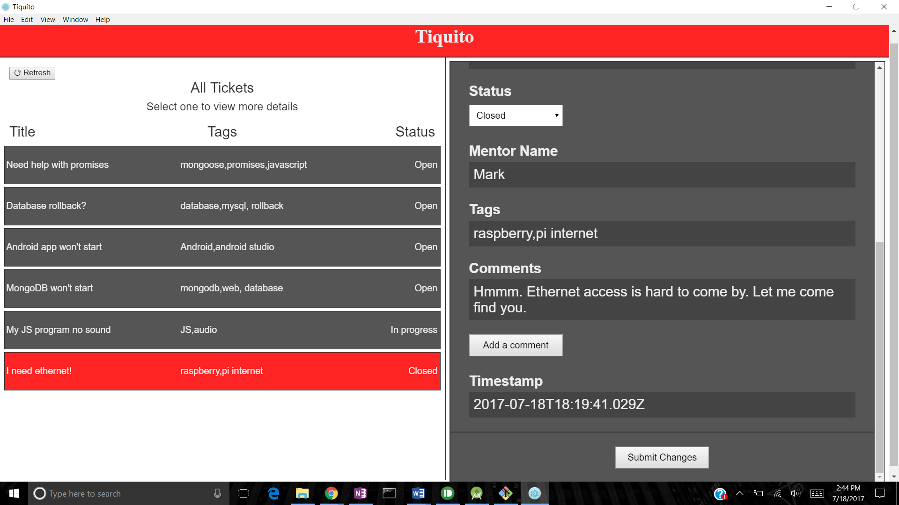
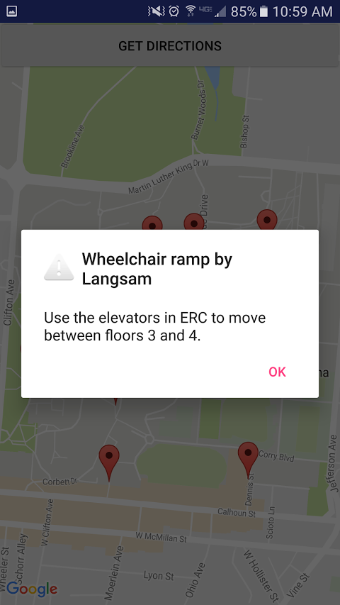
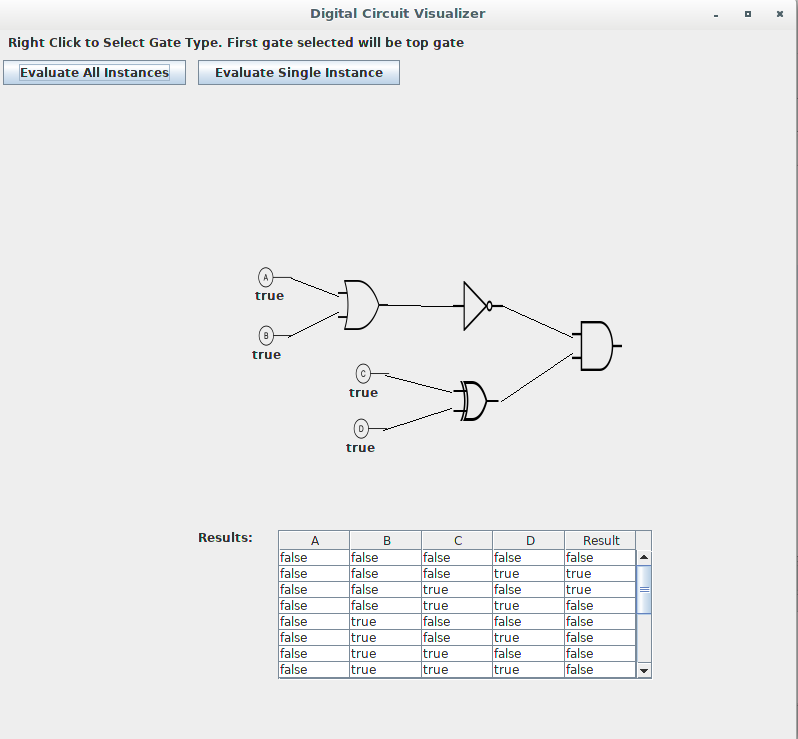

| home |
WHAT
projects - development just for fun.
not all of my projects, though! find the rest of them at https://github.com/zcollins0
mouse over project titles to see pictures.
Tiquito
Tiquito (pronounced similarly to "taquito") is a customer service ticket management system for hackathons. My friends and I are some of the leaders of the RevolutionUC oragnizing team. We decided that having a central system for participants to use to ask for help with their projects could really benefit the hackathon. So, we created Tiquito. Tiquito is meant to facilitate making connections between hackathon participants and mentors, and to help hackathon participants get their problems solved. Tiquito includes a web interface at https://tiquito.com, and desktop and Android clients for administration. Tiquito allows users to submit help requests. Then, mentors and organizers at the hackathon can respond to and manage these requests.
Find tiquito at https://github.com/kurtlewis/tiquito
tIQit

The project that inspired Tiquito, tIQit (pronounced "ticket") was built in ~24 hours at HackYSU. It was a less complete version of Tiquito, lacking the desktop and Android clients. Like the web portion of Tiquito, it was built using Javascript, Pug, and CSS. It uses a Node.js backend with Express.js and Pug (then known as Jade) for routing and rendering.
Find tIQit at https://github.com/zcollins0/tIQit
Campus Accessibility
Campus Accessibility is an Android app designed to help people with movement impairments navigate UC's hilly campus. Users are able to place and share map markers at troublesome locations (like steep hills) with descriptions of how to avoid going through that location. Campus Accessibility was written in less than 24 hours at OHI/O.
Find Campus Accessibility at https://github.com/ltebben/Campus-Accessibility
Digital Circuit Visualizer
Digital Circuit Visualizer is just that - a digital circuit visualizer. It lets users place logic gates (AND, OR, etc) to construct digital circuits and generate tables of input/output combinations for the circuits they built. To analyze only a specific set of inputs, the user can manually set the value of each input node. Digital Circuit Visualizer was my first serious Java project.
Find Digital Circuit Visualizer at https://github.com/zcollins0/digital-circuit-visualizer